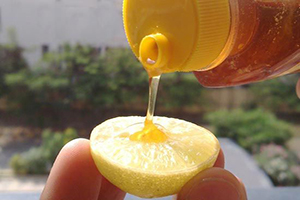
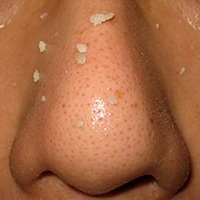

အမည္း စက္ ေပ်ာက္ ကင္း ရန္


၁။ ခရမ္း ခ်ဥ္ သီးက အမည္း စက္ ေတြကုိ ေကာင္း ေကာင္း ေပ်ာက္ကင္း ေစပါတယ္။ ခရမ္း ခ်ဥ္ သီးကုိ အခြံႏြာၿပီး ညက္ ေအာင္ ေျခပါ။ ျပီး ေနာက္ မ်က္ နွာ ေပၚတြင္ အထူးသျဖင့္ အမည္း စက္ မ်ား ေပၚတြင္ လိမ္း ပါ။ မအိပ္ ခင္ လိမ္း ျပီး မနက္ ခင္း မွ ေရျဖင့္ ေဆး ေၾကာပါ။
၂။ သံပုရာရည္ အနည္း ငယ္ ႏွင့္ ဆားတုိ႔ကုိ ေရာ ေမႊပါ။ မ်က္ ႏွာကုိ ေရခပ္ ေႏြး ေႏြးႏွင့္ ေဆး ေၾကာၿပီးမွ သံပုရာရည္ ကုိ သုတ္ လိမ္း ပါ ။ မိနစ္ ၂၀ခန္႔ ၾကာမွ ေရခပ္ ေႏြး ေႏြးႏွင့္ ထပ္ ေဆးပါ။
၃။ ပ်ားရည္ ကေတာ့ အဆီျပန္ တဲ့သူမ်ားႏွင့္ အမည္း စက္ ရွိတဲ့ သူမ်ားအတြက္ အထူးသင့္ ေလ်ာ္ ပါတယ္။ ပ်ားရည္ သင့္ ေလ်ာ္ ေသာ ပမာဏကုိ အမည္း စက္ မ်ား ေပၚတြင္ လိမ္း ျပီး ၁၅မိနစ္ ခန္႔ အၾကာတြင္ ေရ ေႏြးႏွင့္ ေဆးပါ။
၄။ ၾကက္ ဥအကာကုိ ပ်ားရည္ စားပြဲတင္ ဇြန္း တစ္ ဇြန္းႏွင့္ သမ ေအာင္ ေမႊပါ။ ထို႔ ေနာက္ အမည္း စက္ မ်ား ေပၚတြင္ လိမ္း ၿပီး မိနစ္ ၃၀ၾကာမွ ေရ ေႏြးျဖင့္ ေဆးပါ။
ႏွစ္ သက္ ရာနည္း လမ္း တစ္ မ်ိဳးကိုသာ သံုးပါ။